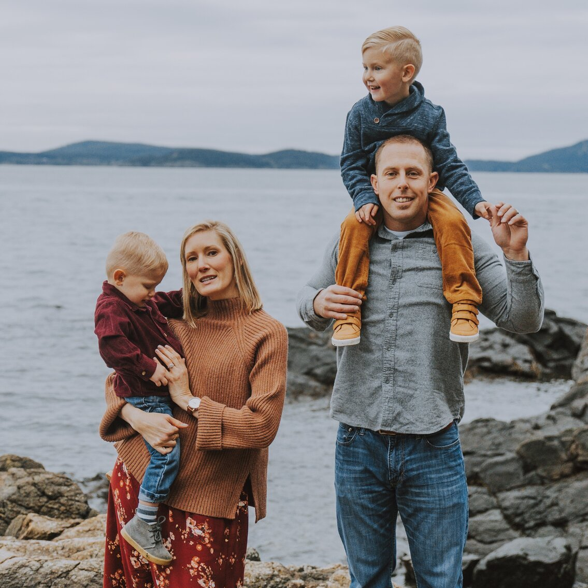
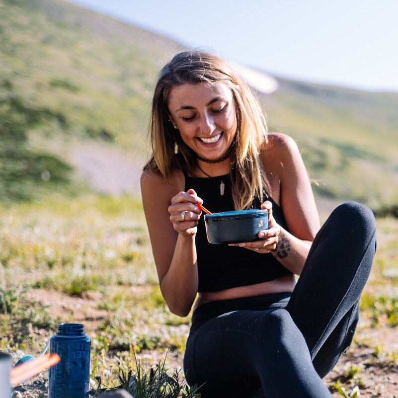

Target Audience
Description:
Weatherbird's target audience consists of outdoors enthusiasts who thrive outside. The fresh mountain air flows through their veins. They are always planning their next outdoor getaway and absolutely love seeing new places. Their outdoor activities include camping, hiking, kayaking, mountain biking, and rock climbing.
Persona 1: David
David is a husband and a father to 2 children. David and his wife love family trips to go do a variety of outdoor activities such as camping, fishing, and mountain biking. Now that they're kids have gotten old enough to participate in most of the activities, they have begun planning out a small trip each month. IN order for them to successfully plan their trips, they need to take into consideration the weather in a variety of potential trip destiations.
Persona 2: Vanessa
Vanessa would live in the outdoors if she could. She is a single 25 year old who lives for the mountains and all they have to offer and explore. She just graduated from college and has the opportunity to work 4 days a week which means having 3 day weekends. She loves camping with her dog and she's always looking for places to go pitch a tent or sleep out under the stars. Because she has a goal of camping in every national park, she has to be really efficient in planning out what time of year to go to specific parks. She does a lot of the camping with just her and her dog, so she relies on good weather to make sure she doesn't get into any dangerous situations.
Scenario 1: John
John is looking to camp in Zion Natinal Park next weekend and is trying to make sure he won't go down there just to find out that it's going to rain and won't be able to camp there. Luckily, John utilizes the Weatherbird app, which analyzed his calendar, noticed the trip coming up, gathered the weather, and notified him that the weather will be a little bit on the colder side but he won't have any rain to worry about.
Scenario 2: Sarah
Sarah and her husband love mountain biking and try to get out every weekend to local spots. They were getting tired of the weather forecast changing everyday and they wanted something that would help them know how the weather is looking for the upcomning week without having to remember to check. They found Weatherbird and now it notifies them each time there is a noteworthy weather change in the location of their next mountain biking trip.
Scenario 3: Scott
Scott loves getting out on his dirtbike with his friends at least 1-2 times per month. They like to go riding in the desert and in the mountains as both environments provide beautiful terrain to ride. Because Scott likes to ride year around, he needs to be aware of when the first snowfall is going to take place. He relies on Weatherbird to let him know when it looks like the temperatures have dropped enough to expect snow. He gets to enjoy riding right up until that first snowfall because Weatherbird has his back.
Scenario 4: Brad
Brad and his family enjoying going to the lake to go boating together as much as possible while the weather is warm. Each year they have a bit of work to do to prepare the boat for the season and make sure that all of their gear is in good working ordre and ready. Since the weather gets warm enough each year at slightly different times, it's really important for them to know when they're able to get the boat out on the water again each year. Brad uses Weatherbird to automatically notify him when the temperatures are warm enough in some of their main boating spots.
Scenario 5: Lindsey
Lindsey is an avid rock climber and she loves getting outdoors to climb as much as possible. When winter comes around, she takes her climbing indoors to rock gyms, but always watches and waits for the cold weather to fade out so she can get back out to climbing outdoors again. Being able to be aware of weather conditions each day allows her to strategically plan out her climbing trips, whether it be multiple days or just an afternoon. She uses Weatherbird to tell her if the conditions are right for climbing and where she'll most likely have good weather for it.